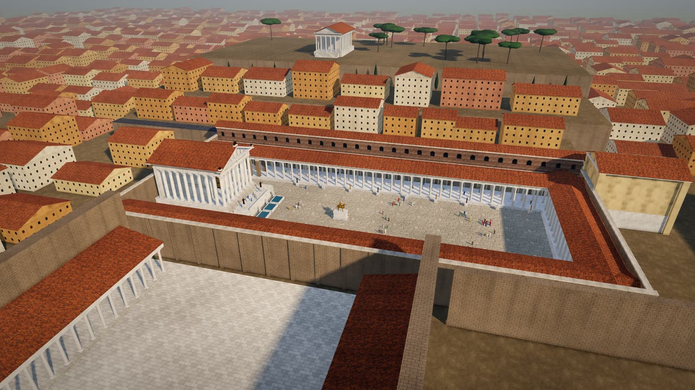
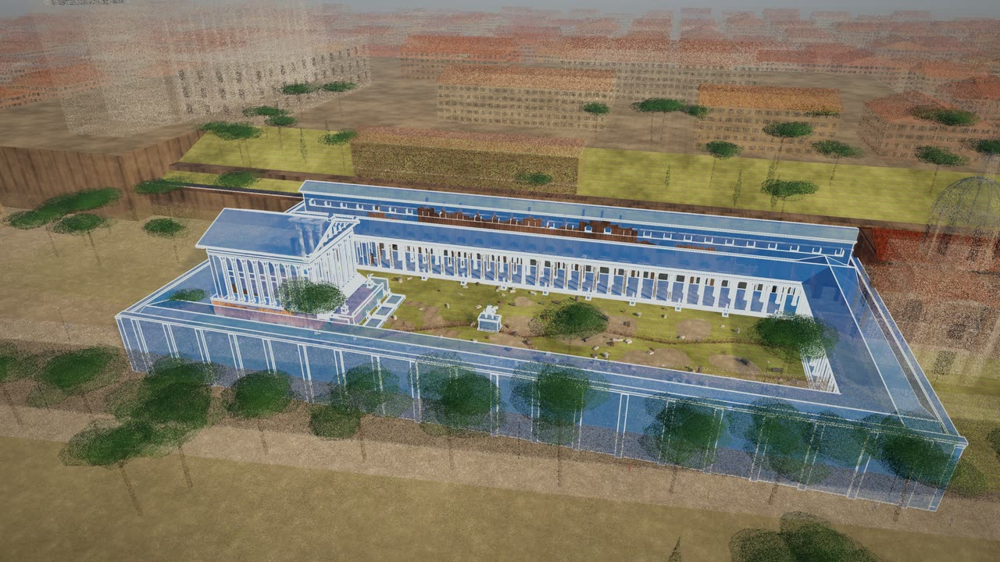
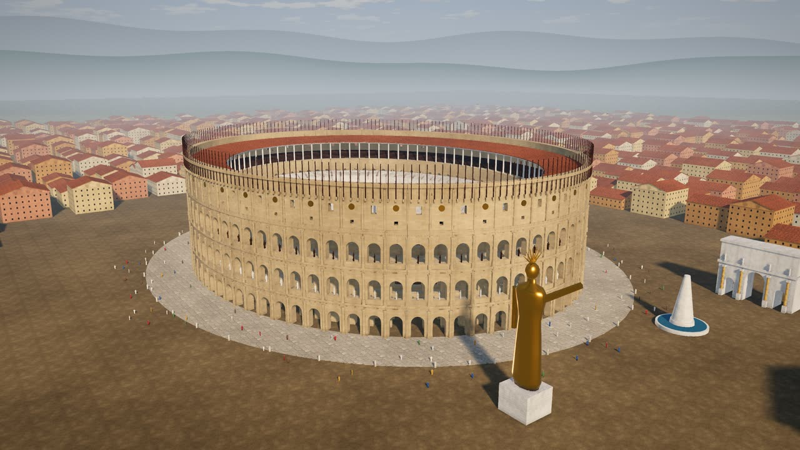
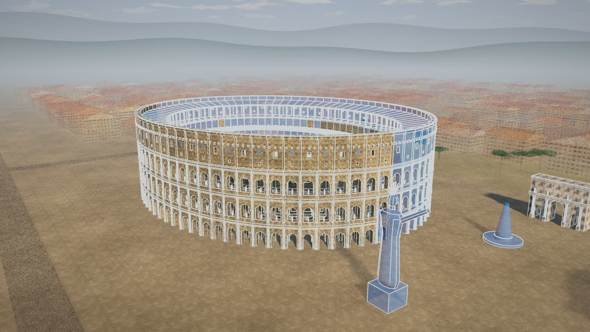

Fly around a place as it stands today, then watch the missing parts grow back until ancient Rome is whole again.


Caesar's own forum and the Temple of Venus Genetrix


The great amphitheatre with its outer wall complete